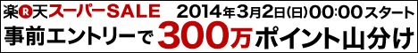

現在、実施中及び開催予定の当店のお得なキャンペーンを中心にご確認いただけます！
| キャンペーン名 | 当店「ライフダイレクト楽天市場店」増税前お客様感謝祭 当店全商品 楽天スーパーポイント10倍 |
|---|---|
| 実施期間 | 2014年3月3日13：00〜3月7日9：59まで |
| 詳細 | ライフダイレクト楽天市場店のオープンを記念して、 当店の全商品を対象に楽天スーパーポイント10倍になる当店限定のキャンペーンを実施しております！ ※定期購入の場合は楽天スーパーポイント2倍となります。 ※キャンペーン割引商品は対象外。 |
↓エントリーはこちら↓

| 実施日時 | 2014年3月2日(日)00:00から2014年3月6日（木）03:59 |
|---|---|
| キャンペーン特典 | 以下の条件を満たす場合、楽天リサーチモニターに新規登録いただいた日に限り、楽天市場でのお買い物のポイントを通常＋9倍分プレゼントいたします。 |
| エントリー有無 | 有 |
| 対象者 | 専用ページからエントリーされた全楽天会員 |
| ポイント付与 | 2014年6月20日（日）頃までに、2014年7月15日（火）まで使える期間限定ポイントで付与します。 ★ご注意★ 企画終了月より3カ月後の付与となります。 ※特典ポイントをご利用いただける期間が短いのでご注意ください。 |
| 対象サービス | ■PC 【通常購入】【楽天ブックス】 ■ケータイ 【通常購入】【楽天ブックス】 ■スマホ 【通常購入】【楽天ブックス】 ※その他、以下の場合は対象外となります。 ・本キャンペーンのエントリーを行っていない場合 ・キャンペーン期間中、お買い物をした同日に楽天リサーチ新規モニター登録完了をしていない場合 ・キャンペーン期間以外のご利用 ・ポイント付与時点でキャンセルされたご注文や、1回の注文合計が100円に満たないお買物 ・通常購入以外の購入分（定期購入・頒布会等） ・チケット・図書カード・金券類のお買い上げ ・送料・ラッピング料 |
| 注意事項 | ※1ヶ月でご利用いただけるポイントは10万ポイントが上限ですので、それを超えるポイントを獲得された場合、ポイントがご利用いただけないまま失効する事がございますので、あらかじめご了承ください。 |
| 実施日時 | 2014年2月7日(金)10:00から12日(水)9:59 |
|---|---|
| エントリー有無 | 有 |
| 対象者 | キャンペーン期間中に専用ページからエントリーし「楽天ツールバー」でログイン、検索した日にお買い物された楽天会員 |
| ポイント付与 | 2014年6月20日（日）頃までに、2014年7月15日（火）まで使える期間限定ポイントで付与します。 ★ご注意★ 企画終了月より3カ月後の付与となります。 ※特典ポイントをご利用いただける期間が短いのでご注意ください。 |
| 対象サービス | 2014年5月20日（火）頃までに2014年5月31日(土)まで使える期間限定ポイントでプレゼントします。 ※特典ポイントをご利用いただける期間が短いのでご注意ください。 |
| 注意事項 | ※1ヶ月でご利用いただけるポイントは10万ポイントが上限ですので、それを超えるポイントを獲得された場合、ポイントがご利用いただけないまま失効する事がございますので、あらかじめご了承ください。 |